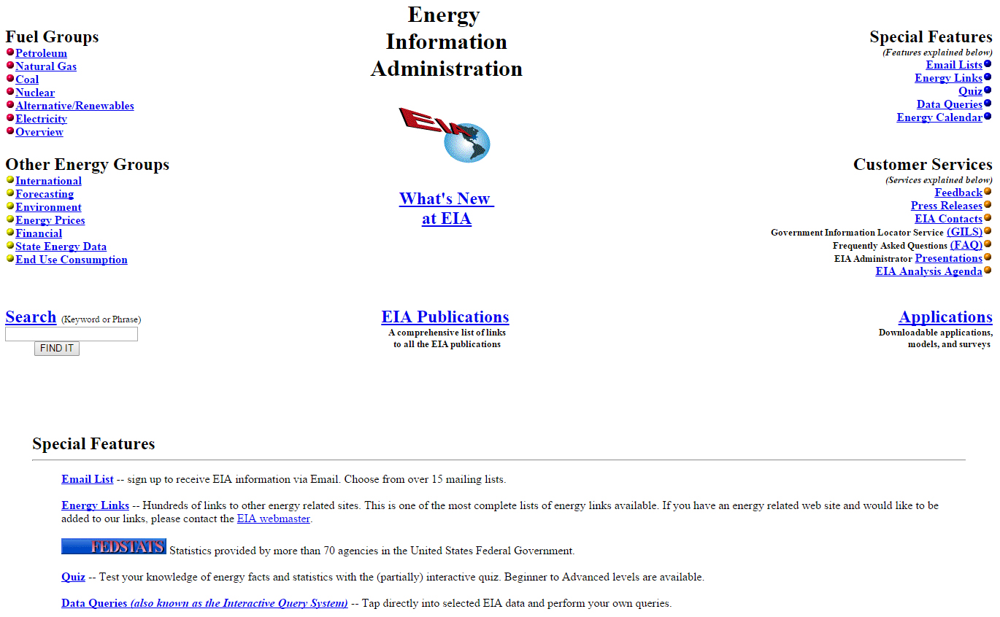

{kind=link}
{kind=link}
About EIA
About EIA.gov
Our website, EIA.gov, is the primary communication channel for the U.S. Energy Information Administration (EIA) and serves as the agency's worldwide energy information point of contact for
- Federal, state, and local governments
- The academic and research communities
- Businesses and industry
- Foreign governments and international organizations
- The news media
- Financial institutions
- The general public
EIA has forged a tradition of excellence for its public website, thanks to a solid vision for a high-quality presence on the web and hard work throughout the agency. EIA.gov has become the public face of the agency and its information, data, analysis, and services have informed policy and programmatic decisions at all levels in regards to energy and its interaction with the economy and the environment. Among the awards and accolades the site has garnered
- First recipient of the National Association of Government Communicators "Best in Show" award, and first-place recipient of its awards for "Best Website" and "Shoestring Budget" for Energy Kids, which was also named by the American Institute of Graphic Arts (AIGA) - DC as one of the 50 strongest examples of print, narrative and interactive design produced in the Maryland, Virginia and the District of Columbia region.
- ClearMark "Award of Excellence" from the Center for Plain Language and a 2nd place award as Best Electronic Publication from the National Association of Government Communicators for the Energy Explained web portal.
- Adobe's Merit Award for excellence in driving government engagement for the Energy Kids and Energy Explained web portals.
- Web Marketing Association's "Best Website Award" for EIA.gov in the Energy and Government categories, and for Energy Kids in the Education category.
Further indicators of the site's success in serving our customers include:
- 570,705 people were subscribed to one or more of our email update lists in December 2016.
- Major search engines (like Google and Bing) refer to us more than one million visitors a month searching for energy topics.
- Search engine rankings of EIA on Google indicate very strong performance on relevant key topics.
- 95% of respondents to our annual web customer satisfaction survey said they were "satisfied" or "very satisfied" with the quality of information on EIA.gov—with 27% indicating they were very satisfied. 83% said they found what they were looking for on our site.
- An "A" grade on the 2016 Federal Plain Language Report Card (for the U.S. Department of Energy, based on a submission from EIA).
20 years on the web
When EIA.gov launched on July 1, 1995, EIA became the first agency within the Department of Energy to venture onto the Internet. In an era before Google, Facebook, and Internet Explorer, the Internet had about 40 million users and 23,500 websites. The seven users who visited EIA.gov on its first day of operation had access to a few dozen web pages and 200 files. A year later, the website was named a "Best in Government" winner of a 1996 Federal Web Showcase Award from former Vice President Al Gore.
EIA homepage as it appeared in January, 1997
Today, the number of visitors to EIA.gov each month has grown from a few thousand in the site's first year to about 2 million annually, and the site now serves up approximately 207,000 web pages. Correspondingly, the number of EIA print publications has decreased from more than 80 in 1995, to five publications in 2005, to just two today.
One of the biggest changes to EIA.gov occurred in February 2011, when a complete website redesign and agency rebranding effort was launched. The new website introduced an emphasis on topical, timely content, centered around a new product: Today in Energy, one of the few daily publications from any U.S. government source.
With the introduction of its Twitter page in 2012, EIA began using social media to expand its reach and deliver energy information when, where, and how customers want to receive it. Today the agency now has more than 94,000 followers on Twitter, as well as additional audiences who interact with us on Facebook, LinkedIn, YouTube, and Flickr. That year EIA also introduced its successful program to create a data ecosystem of interlinked online query tools, interactive charts and maps, and a robust open data program that has dramatically democratized valuable government statistics and firmly positioned EIA as a leader among the federal statistical agencies. This program includes:
- Interactive data browsers—Electricity, Coal, Oil Imports, International Energy Data, and Forecasts—that allow users to quickly and easily find, map, and graph EIA data to discover trends hidden in the statistical datasets. These browsers have been instrumental to unlocking EIA's data by transitioning the agency away from PDF-based reports and other less accessible formats.
- The agency's open data implementation—consisting of a RESTful API, a bulk download facility, widgets that allow users to embed interactive visualizations of the data on any website, and Microsoft Excel and Google Sheets tools that allow users to automatically import—and then manipulate—EIA's data. Currently, more than 1.6 million time series are organized into 29,000 categories and 10 bulk files are available, making EIA the U.S. Department of Energy's foremost publisher of open data.
- The U.S. Energy Mapping System, which contains more than 60 interactive layers and incorporates real-time map data from the NOAA and FEMA, providing insights into the likely impact of weather events to the U.S. energy infrastructure. EIA's mapping program has been cited by the Federal Geospatial Data Committee as a best-practice exemplar that highlights DOE's commitment to "coordinate GIS efforts with its federal, state, and private partners to reduce GIS costs, improve the quality of services, and increase efficiency to support the interagency emergency response community."
Finally, in September, 2014, EIA introduced further enhancements including a new layout for the website's major landing (Sources & Uses and Topics) pages that prominently features the agency's timely analysis, current data, and recently released data. We also began organizing EIA's vast collection of reports and other analytic content by keyword. This use of site-wide "tagging" helps users locate EIA information based on the energy topic that is of particular interest to them.
View and share EIA's Internet anniversary video and infographic.
How to link to EIA.gov
EIA.gov is a public domain website, which means you may link to it at no cost and without specific permission.
About EIA
- Our Work
- EIA News and Events
-
Items of interest to future employees and EIA alumni
- EIA Staff and News
- Alumni Corner
- Our Organization
- Budget, Plans & Performance
- Our History
- EIA Conference
- Policies & Procedures
- Information Quality Guidelines
- EIA Standards Manual
- Statement of Commitment to Scientific Integrity by Principal Statistical Agencies
- Accessibility
- EIA Writing Style Guide
- Copyrights & Reuse
- Freedom of Information Act
- Privacy Statement & Security Policy
- Publishing Priorities & Schedule
- CIPSEA Reporting
- About Our Website